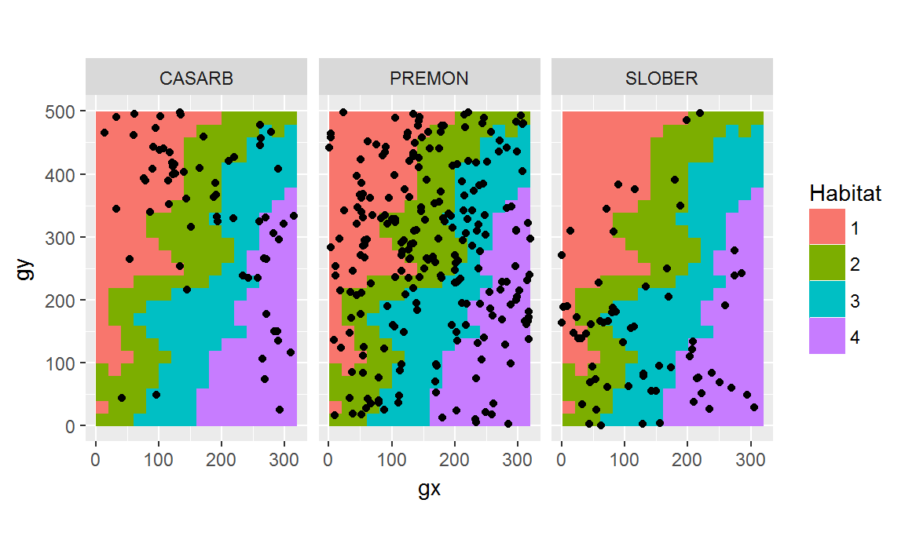

vignettes/tt_test.Rmd
tt_test.RmdThis article shows how to determine habitat-species associations with the function tt_test(), developed by Sabrina Russo, Daniel Zuleta, Matteo Detto, and Kyle Harms.
First, install and load (“open”) the relevant packages.
we will use example datasets that come with fgeo.habitat.
census <- luquillo_tree6_random
str(census)
#> Classes 'tbl_df', 'tbl' and 'data.frame': 1000 obs. of 19 variables:
#> $ treeID : int 104 119 180 602 631 647 1086 1144 1168 1380 ...
#> $ stemID : int 143 158 225 736 775 793 1339 1410 1438 1702 ...
#> $ tag : chr "10009" "100104" "100171" "100649" ...
#> $ StemTag : chr "10009" "100104" "100174" "100649" ...
#> $ sp : chr "DACEXC" "MYRSPL" "CASARB" "GUAGUI" ...
#> $ quadrat : chr "113" "1021" "921" "821" ...
#> $ gx : num 10.3 182.9 164.6 149 38.3 ...
#> $ gy : num 245 410 410 414 245 ...
#> $ MeasureID: int 582850 578696 617049 614253 598429 614211 603131 616923 603151 614023 ...
#> $ CensusID : int 6 6 6 6 6 6 6 6 6 6 ...
#> $ dbh : num 195 44.9 46.1 33.1 139 248 176 75 613 NA ...
#> $ pom : chr "1.45" "1.25" "1.35" "1.3" ...
#> $ hom : num 1.45 1.26 1.34 1.3 1.25 1.35 1.42 1.3 1.25 NA ...
#> $ ExactDate: Date, format: "2016-04-20" "2016-08-04" ...
#> $ DFstatus : chr "alive" "alive" "alive" "alive" ...
#> $ codes : chr "MAIN;A" "MAIN;A" "SPROUT;A" "MAIN;A" ...
#> $ nostems : num 1 1 2 1 1 1 1 1 1 1 ...
#> $ status : chr "A" "A" "A" "A" ...
#> $ date : num 20564 20670 20670 20664 20565 ...# Creating habitat data from elevation data
habitat <- fgeo.tool::fgeo_habitat(luquillo_elevation, gridsize = 20, n = 4)
str(habitat)
#> Classes 'fgeo_habitat', 'tbl_df', 'tbl' and 'data.frame': 400 obs. of 3 variables:
#> $ gx : num 0 0 0 0 0 0 0 0 0 0 ...
#> $ gy : num 0 20 40 60 80 100 120 140 160 180 ...
#> $ habitats: int 1 1 1 1 1 1 1 1 1 1 ...To load your own data, you may run something like this:
We will pick alive trees, of 10 mm or more, and of sufficiently abundant species.
pick <- filter(
census,
# Keep only alive
status == "A",
# Keep dbh of 10 mm or more (drops missing dbh)
dbh >= 10
)
# Count number of rows per species
pick <- add_count(pick, sp)
# Keep sufficiently abundant trees
pick <- filter(pick, n > 50)
# Summary
unique(select(pick, sp, n))
#> # A tibble: 3 x 2
#> sp n
#> <chr> <int>
#> 1 CASARB 66
#> 2 PREMON 234
#> 3 SLOBER 66Before testing, we can overview the relationship between species an habitats with a plot.
# Tweaks
offset <- 20 / 2
habitat2 <- mutate(
habitat,
# Center species and habitat data
x = gx + offset,
y = gy + offset,
# From continuous to categorical
habitats = as.factor(habitats)
)ggplot(pick, aes(x = gx, y = gy)) +
geom_raster(data = habitat2, aes(x, y, fill = habitats)) +
geom_point() +
coord_fixed() +
facet_wrap(~sp) +
labs(fill = "Habitat")
tt_test() and any number of speciesall_sp <- unique(pick$sp)
out <- tt_test(census, all_sp, habitat)
#> Using `plotdim = c(320, 500)`. To change this value see `?tt_test()`.
#> Using `gridsize = 20`. To change this value see `?tt_test()`.
out
#> [[1]]
#> N.Hab.1 Gr.Hab.1 Ls.Hab.1 Eq.Hab.1 Rep.Agg.Neut.1 Obs.Quantile.1
#> CASARB 29 1418 179 3 0 0.886
#> N.Hab.2 Gr.Hab.2 Ls.Hab.2 Eq.Hab.2 Rep.Agg.Neut.2 Obs.Quantile.2
#> CASARB 20 416 1182 2 0 0.26
#> N.Hab.3 Gr.Hab.3 Ls.Hab.3 Eq.Hab.3 Rep.Agg.Neut.3 Obs.Quantile.3
#> CASARB 12 804 790 6 0 0.502
#> N.Hab.4 Gr.Hab.4 Ls.Hab.4 Eq.Hab.4 Rep.Agg.Neut.4 Obs.Quantile.4
#> CASARB 5 554 1040 6 0 0.346
#>
#> [[2]]
#> N.Hab.1 Gr.Hab.1 Ls.Hab.1 Eq.Hab.1 Rep.Agg.Neut.1 Obs.Quantile.1
#> PREMON 91 1483 116 1 0 0.927
#> N.Hab.2 Gr.Hab.2 Ls.Hab.2 Eq.Hab.2 Rep.Agg.Neut.2 Obs.Quantile.2
#> PREMON 89 1142 455 3 0 0.714
#> N.Hab.3 Gr.Hab.3 Ls.Hab.3 Eq.Hab.3 Rep.Agg.Neut.3 Obs.Quantile.3
#> PREMON 40 409 1189 2 0 0.256
#> N.Hab.4 Gr.Hab.4 Ls.Hab.4 Eq.Hab.4 Rep.Agg.Neut.4 Obs.Quantile.4
#> PREMON 14 76 1523 1 0 0.0475
#>
#> [[3]]
#> N.Hab.1 Gr.Hab.1 Ls.Hab.1 Eq.Hab.1 Rep.Agg.Neut.1 Obs.Quantile.1
#> SLOBER 18 387 1212 1 0 0.242
#> N.Hab.2 Gr.Hab.2 Ls.Hab.2 Eq.Hab.2 Rep.Agg.Neut.2 Obs.Quantile.2
#> SLOBER 24 810 788 2 0 0.506
#> N.Hab.3 Gr.Hab.3 Ls.Hab.3 Eq.Hab.3 Rep.Agg.Neut.3 Obs.Quantile.3
#> SLOBER 17 1182 414 4 0 0.739
#> N.Hab.4 Gr.Hab.4 Ls.Hab.4 Eq.Hab.4 Rep.Agg.Neut.4 Obs.Quantile.4
#> SLOBER 7 912 680 8 0 0.57
#>
#> attr(,"class")
#> [1] "tt_lst" "list"To help you interpret the results, you can use summary().
summary(out)
#> Species Habitat_1 Habitat_2 Habitat_3 Habitat_4
#> 1 CASARB neutral neutral neutral neutral
#> 2 PREMON neutral neutral neutral neutral
#> 3 SLOBER neutral neutral neutral neutralYou may want to combine the output into a single matrix, by row-binding each element of the results-list.
Reduce(rbind, out)
#> N.Hab.1 Gr.Hab.1 Ls.Hab.1 Eq.Hab.1 Rep.Agg.Neut.1 Obs.Quantile.1
#> CASARB 29 1418 179 3 0 0.886
#> PREMON 91 1483 116 1 0 0.927
#> SLOBER 18 387 1212 1 0 0.242
#> N.Hab.2 Gr.Hab.2 Ls.Hab.2 Eq.Hab.2 Rep.Agg.Neut.2 Obs.Quantile.2
#> CASARB 20 416 1182 2 0 0.260
#> PREMON 89 1142 455 3 0 0.714
#> SLOBER 24 810 788 2 0 0.506
#> N.Hab.3 Gr.Hab.3 Ls.Hab.3 Eq.Hab.3 Rep.Agg.Neut.3 Obs.Quantile.3
#> CASARB 12 804 790 6 0 0.502
#> PREMON 40 409 1189 2 0 0.256
#> SLOBER 17 1182 414 4 0 0.739
#> N.Hab.4 Gr.Hab.4 Ls.Hab.4 Eq.Hab.4 Rep.Agg.Neut.4 Obs.Quantile.4
#> CASARB 5 554 1040 6 0 0.3463
#> PREMON 14 76 1523 1 0 0.0475
#> SLOBER 7 912 680 8 0 0.5700You also can gather all results into a single dataframe – which lets you use a wide range of tools for data manipulation and visualization.
tt_df <- to_df(out)
tt_df
#> # A tibble: 12 x 8
#> habitat sp distribution stem_count Eq.Hab Gr.Hab Ls.Hab Obs.Quantile
#> * <chr> <chr> <chr> <dbl> <dbl> <dbl> <dbl> <dbl>
#> 1 1 CASARB neutral 29 3 1418 179 0.886
#> 2 1 PREMON neutral 91 1 1483 116 0.927
#> 3 1 SLOBER neutral 18 1 387 1212 0.242
#> 4 2 CASARB neutral 20 2 416 1182 0.26
#> 5 2 PREMON neutral 89 3 1142 455 0.714
#> 6 2 SLOBER neutral 24 2 810 788 0.506
#> 7 3 CASARB neutral 12 6 804 790 0.502
#> 8 3 PREMON neutral 40 2 409 1189 0.256
#> 9 3 SLOBER neutral 17 4 1182 414 0.739
#> 10 4 CASARB neutral 5 6 554 1040 0.346
#> 11 4 PREMON neutral 14 1 76 1523 0.0475
#> 12 4 SLOBER neutral 7 8 912 680 0.570You can benefit from storing your results in a dataframe. Compared to a matrix, a dataframe fits better in common workflows for data manipulation and visualization. The dataframe is the most important data structure used in dplyr, ggplot2, and many other packages. Here are some examples of what you can do with our dataframe output. (The next few code chunks use the pipe operator (%>%) to avoid saving intermediary results and to make our code more expressive – where each line is an imperative statement that communicates our intention.)
tt_df %>% filter(distribution == "aggregated")
#> # A tibble: 0 x 8
#> # ... with 8 variables: habitat <chr>, sp <chr>, distribution <chr>,
#> # stem_count <dbl>, Eq.Hab <dbl>, Gr.Hab <dbl>, Ls.Hab <dbl>,
#> # Obs.Quantile <dbl>